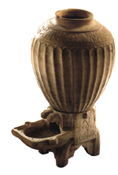

L’Imamat Ismaili depuis le période de division dans la communauté Shia: une vue d’ensemble.
|
La fondation du califat fatimide ismaili en Ifriqiya (Tunisie) dans les années 909 a été le point culminant d’un long processus de développement, régenté par les descendants de l'Imam Ismail et basé sur l’engagement de la promotion de l’idéal Islamique de justice sociale et d’équité. Il y eut beaucoup d’écrits au sujet du califat fatimide, un des plus justes est celui qui traite de la menace contagieuse du despotisme et de l’anarchie, et a été remarqué pour sa tolérance religieuse. Le géographe al-Muqadasi a écrit sur l’harmonie parmi différents groupes religieux sur le territoire fatimide, lequel, à l’apogée du Califat, établi en Egypte, s’étendit vers l’Ouest en Afrique du Nord, en Sicile et dans d’autres îles Méditerranéennes, et à l’Est vers la côte Africaine de la Mer Rouge, en Palestine, en Syrie, au Yémen et dans le Hijab. 
La conception ismaili de l’histoire, accordant le respect qui convient aux religions monothéistes importantes de la tradition abrahamiques, a fourni le cadre intellectuel pour une participation des disciples des différentes croyances dans les affaires de l’état fatimide. Dans la cour de justice fatimide, comme dans les autres sphères du gouvernement, les nominations étaient basées sur le mérite. En élevant un juriste sunnite au poste de chef qadi, Imam calife Al-Hakim a félicité ceux qui ont participé aux nominations, pour leur sens de la justice et de grandeur, comme facteurs déterminants. La tolérance des Fatimides envers les non Musulmans a également été bien confirmée. Chrétiens et Juifs, aussi bien que Musulmans d’autres branches, ont été capables d’atteindre les échelons les plus élevés de l’administration dépendamment de leurs compétences. 
La fondation du Califat fatimide, premier état majeur Shia, a eu l’opportunité de promulguer la première école Ismaili de jurisprudence. Basée sur les principes Shia, elle était formulée et exécutée avec la déférence due à la philosophie universaliste de la tolérance religieuse des Fatimides. Dans le même esprit, les Fatimides ont été les premiers à encourager le mécénat privé sur les mosquées et autres bâtiments religieux par des Musulmans de différentes confessions. Leur politique reflétait plus un fait historique de la pluralité des voies religieuses plutôt qu’une interprétation monolithique de la foi. Les Fatimides ont généreusement encouragé la recherche intellectuelle. Les études naturelles et philosophiques n’étaient pas bridées et se développaient bien. La culture de la liberté de pensée des scientifiques a attiré les plus fins esprits de toutes les convictions religieuses de l’époque, à la cour des Fatimides: des mathématiciens et des ingénieurs comme Ibn Haytham, des astronomes comme Ali b.Yunus; des physiciens comme Al-Tamimi, Al-Israili et Ibn Ridwan. La culture scientifique n’était pas non plus l’apanage des hommes de lettres et de sciences, dans la mesure où des efforts étaient faits pour populariser leurs savoirs. Al-Azhar, la Mosquée principale du Caire construite par Imam/calife al-Muizz en 972, était également un centre du savoir, généreusement doté par le Fatimide Imam/califes. dar al-'Ilm, la Maison du Savoir établie au Caire en 1005 par Imam/calife al-Hakim, était la première institution médiévale du savoir, un précurseur de l’université moderne, qui a réuni dans son programme d’études un choix complet des disciplines académiques majeures, de l’étude du coran et des traditions prophétiques à travers la jurisprudence, la philologie et la grammaire, à la médecine, la logique, les mathématiques et l’astronomie. L’institution était ouverte aux disciples de différentes religions.
Dans la dernière décade du onzième siècle, la communauté Ismaili se divisa à la succession de Imam/calife Mustansir billah (d .1094). Une partie de la communauté suivit son fils cadet al-Mustali. L’autre partie donna son allégeance à son fils aîné l’Imam Nizar de qui, l'Aga Khan, l’Imam actuel des Ismailis établi sa descendance. Le siège de l’Imamat Nizari se déplaça ensuite en Iran où les Ismailis réussirent à établir un état comprenant un réseau de défense composé d’éléments fortifiés. Avec son état-major à Alamut, en Iran du Nord, l’état Ismaili s’étendit plus tard partiellement en Syrie. Bien qu’il y eut des guerres continuelles parmi les musulmans sur des questions de pouvoir et de territoire, aucune toile, ne dépeint cette période de l’histoire Musulmane comme un camps faisant face à l’autre. L’équation militaire a été compliquée par la présence des croisés. A cette la période, déplacer les alliances entre tous ces différents groupes, était dans l’ordre normal des choses. En dépit de leur lutte continuelle pour tenir les puissants ennemis à distance, les Ismailis de l’état d’Alamut n’ont pas renoncé à leurs traditions intellectuelles et littéraires. Leurs forteresses ont hébergé d’impressionnantes bibliothèques dont les collections allaient des livres traitant de religions diverses et des brochures philosophiques et scientifiques, aux outils scientifiques. Les forces hostiles environnantes ne les forcèrent pas non plus, à abandonner leur politique libérale de soutien aux gens du savoir, qui bénéficia aussi bien aux savants et scientifiques Musulmans que aux non Musulmans. Leurs colonies ont été de généreux sanctuaires pour les vagues de réfugiés, indépendamment de leurs croyances politiques, fuyant les invasions Mongol. Ces invasions des hordes Mongol, en 1256, amenèrent la destruction de l’état Ismaili. Baghdad, la capitale Abbasid, fut une proie bien plus facile pour les Mongols, dont les avancées plus à l’ouest ont été contenues par les souverains Mamluk de la Syrie et de l’Egypte. Les Ismailiens Syrien ont été ainsi épargnés des atrocités des Mongols. Plusieurs Ismailiens des terres Iraniennes trouvèrent refuge en Afghanistan, le bassin Oxus en Asie Centrale, Chine et le sous continent Indien, où de larges colonies Ismaili ont existé depuis le neuvième siècle. Les Ismailis restés sur les terres Iraniennes ont dû se protéger contre les dynasties hostiles. Dû à la nature ésotérique de leurs propres traditions qu’ils ont partagé avec les deux communautés Musulmanes Shia et Sunni, les Tariqas Sufis ont accueilli chaleureusement les Ismailis. Bien que les décrets Sufis, alors influents sur les terres Iraniennes, aient eu une prédominance Sunnit, ils ont tous tenu pratiquement, la famille du Prophète en haute estime. Durant cette période difficile, la mission Ismaili garda sa flexibilité. Sous la direction de chaque Imam successif, de nouveaux centres d’activités ont été établis dans le sous-continent Indien, en Afghanistan, dans les régions montagneuses de l’Hindu kuch, en Asie Centrale et partiellement en Chine. L’avènement des règles Shia dans l’Iran du quinzième siècle apporta un certain nombre d’opportunités aux Ismailiens et autres Shias. En ce temps là, les souverains Safawid Shia ont entretenu des relations amicales avec les Imams Ismaili, dont l’un d’eux a épousé une princesse Safawid. Plus tard, sous les Zands, les Imams Ismaili jouèrent un rôle important en gouvernant la province de Kirman. La période moderne Résultant des mouvements migratoires et des missions d’activités dans son histoire, la communauté ismailie est arrivée à s’installer dans un vaste éventail de pays à travers le globe. Comme la Ummah Musulmane dans son intégralité, elle représente aujourd’hui une riche diversité de cultures, de langues et de nationalités. Ses traditions se projettent sur quatre grands groupes géographiques et ethnographiques: les asiatiques du Centre, les Persans, les Arabes et les asiatiques du Sud, tous étant unis par leur allégeance à leur actuel, 49ième Imam héréditaire, Prince Karim Aga Khan. Les colonies en Afrique se composent principalement d’Ismailis originaires du sous continent Indien, alors que les colonies récemment installées à l’Ouest comprennent les Ismailis de toutes les traditions ci-dessus. La phase moderne de l’histoire ismailie commença lorsque le quarante sixième Imam, Aga Hassan Ali Shah, émigra en Inde au début des années 1840. Il a été le premier Imam à porter le titre de Aga Khan, accordé par l’empereur Persan, Fath Ali Shah. Il s’installa à Mombai (Bombay) en 1848, où il établit son Quartier général. L’événement eut un effet stimulant sur la communauté en Inde et sur la vie religieuse et communautaire de tous les Ismailis dans le monde. Cela aida la communauté en Inde à développer une plus grande confiance en soi et une identité en tant que Shia dans la communauté musulmane, et à poser des fondations pour son progrès social. Cela marqua aussi le début d’une époque de contacts réguliers entre l’Imam et ses disciples largement dispersés. Leurs délégations vinrent à Mumbai pour recevoir les directives de l’Imam d’aussi loin que Kachgar en Chine, Boukhara en Asie Centrale, toutes les parties de l’Iran, le Moyen Orient, la Côte Africaine et sa communauté encore restreinte.
L’Aga Khan I mourut en 1881. Son fils aîné Aga Ali Shah lui succéda à l’Imamat. Aga Ali Shah prit le titre de Aga Khan II, et fut honoré du titre de Son Altesse, accordé initialement à son père, par le gouvernement anglais. Edifié sur l’initiative de son père, l’Aga Khan II mis en place la tâche de longue haleine de développement social de la communauté, avec une emphase sur l’éducation. Il créa un certain nombre d’écoles à Mumbai et dans d’autres centres Ismaili. De manière plus large, il servit dans le consul législatif de Bombay et fut élu Président de l’Association Nationale des Musulmans en reconnaissance de ses efforts dans le domaine de l’éducation et autres activités philanthropiques pour le bénéfice des Indiens musulmans en général, aussi bien shia et sunnite.
L’Aga Khan II décéda en 1885 après avoir été l’Imam durant quatre ans seulement. L’institution de l’Imamat délégua sa succession à son fils Sultan Muhammad Shah sous la tutelle de Shams al-Mulk, une petite-fille du monarque Persan, Fath Ali Shah. Au moment de son avènement, l’Imam Sultan Muhammad Shah, Aga Khan III, avait moins de huit ans. A l’âge de neuf ans il reçut le titre honorifique de Son Altesse par la Reine Victoria. |

 Entrée
Entrée